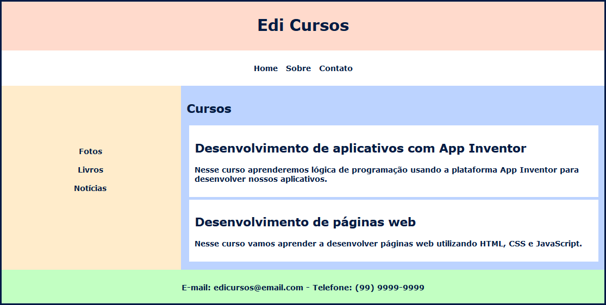
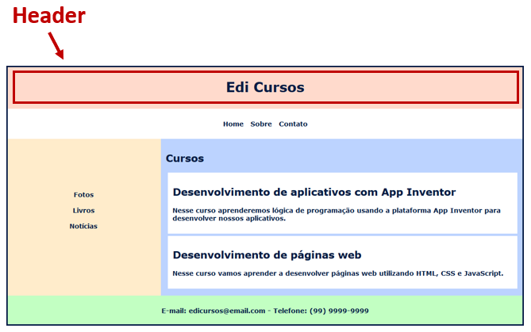
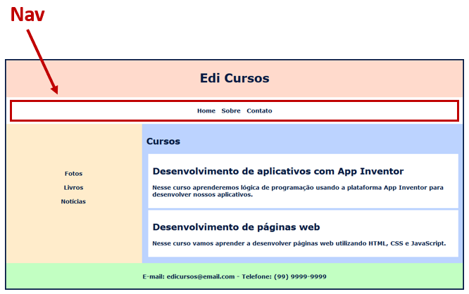
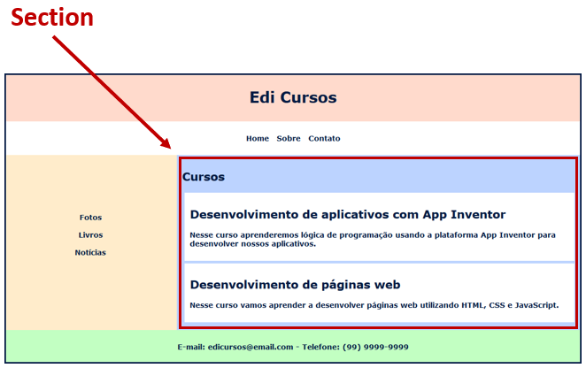
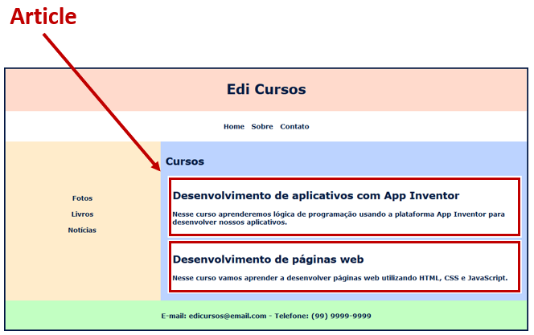
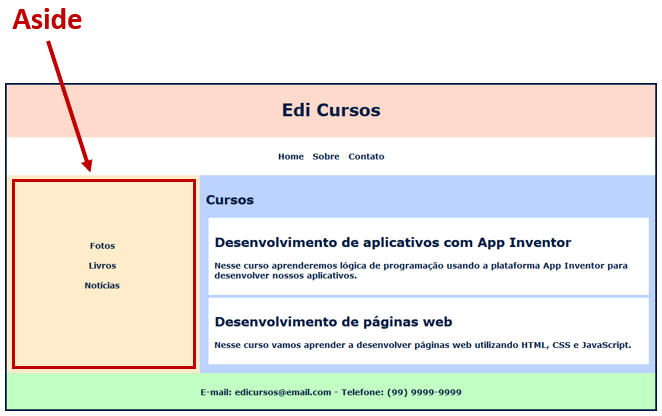
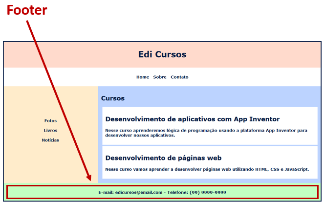

Na aula de hoje vamos aprender quais são os elementos que formam o layout de uma página web.
Você já percebeu que a maioria dos sites tem alguns elementos em comum como por exemplo, um menu com as opções do site, um local onde fica o conteúdo e um rodapé com informações sobre a empresa?
O conjunto desses elementos formam o layout de um site, nessa aula nós vamos aprender quais são esses elementos e qual é a finalidade de cada um.
O HTML tem vários elementos semânticos que definem cada parte de um site. É importante colocar cada componente do site em seu devido lugar, pois isso que os robôs de busca como o Google entendam melhor o conteúdo do seu site.
Criando um site que segue o padrão e colocando cada parte do site em seu devido lugar as chances deste aparecer nas primeiras páginas de busca aumenta.
Vamos ver a seguir cada um desses elementos usados para definir as diferentes partes de um site, para isso vamos usar o exemplo da página web abaixo.

No elemento chamado Header normalmente colocamos o nome e a logo da empresa proprietária do site.
No entanto, o Header é um elemento que é adequado dentro de outros elementos como em uma Section, o qual veremos no decorrer do texto. Neste caso, ele será usado para colocar o título da Section.
Em resumo o Header é para identificar os cabeçalhos dentro do nosso site, e ele pode ser usado mais de uma vez nas mesmas páginas web. Veja a seguir, um exemplo do Header sendo usado em um site para dar destaque ao nome da empresa proprietária do site.

A tag Nav define o elemento onde colocamos todos os links de navegação dos nossos sites.
Em um site institucional onde normalmente temos as páginas Home, Sobre, Contato, entre outras, colocamos todas essas opções de navegação dentro do elemento Nav.
Mas é importante dizer que em outras partes do site você também pode colocar links de navegação se for necessário, no entanto o elemento Nav é o indicado para colocar os links principais para navegação do seu site. Veja abaixo uma aplicação do Nav em um site.

No exemplo acima, temos o elemento Nav contendo os links de navegação entre as páginas Home, Sobre e Contato da empresa.
É uma tag que define uma seção dentro do site: uma seção com fotos, uma seção onde vão ficar os produtos, outra onde vão ficar as matérias caso seja um jornal, entre outros.
Uma mesma página web pode ter várias seções. Imagine que você vai criar um site onde há uma lista de produtos oferecidos pela empresa, e logo abaixo há uma lista dos principais clientes da empresa e ainda há uma outra área do site onde você vai colocar fotos da empresa.
Todas essas partes podem estar na mesma página, desde que estejam bem separadas utilizando uma Section para cada uma delas. Veja a seguir, um exemplo de Section que contém todo o conteúdo principal da página de um site.

A tag Article define um elemento onde o conteúdo é independente, por exemplo, artigos de um jornal, nesta situação poderíamos ter uma Section com todos os artigos do jornal, e cada um dos artigos poderia estar dentro de um elemento Article.
Você pode usar Section dentro de Article sem problemas, pois um artigo pode ter diferentes seções dentro dele, assim como pode existir uma seção do site onde há vários artigos. Veja a seguir um exemplo de Article sendo usado em um site:

Nesse exemplo você pode notar que há dois elementos Article dentro de uma Section.
O elemento Aside pode ser utilizado para colocar conteúdos complementares ao conteúdo principal do site. Veja a seguir um exemplo onde o Aside foi implementado.

Nessa página web o Aside exibe links secundários com fotos, livros e notícias sobre a empresa.
A tag Footer define o rodapé de uma página web ou de uma seção que compõe a página.
O elemento Footer pode ser empregado mais de uma vez na mesma página assim como o elemento Header, pois cada Section pode ter seu próprio Footer com informações referentes ao conteúdo da Section.
Normalmente no Footer da página ficam mais informações sobre a organização do site. Veja a seguir, um exemplo de Foote em um site.

Nesse caso, foram colocados o e-mail e o telefone para contato da empresa dentro do elemento Footer.
Nessa aula aprendemos quais são os elementos precisos para criar o layout de páginas web.
É importante você saber que esses elementos não são obrigatórios, ou seja, seu site não precisa ter todos eles, mas sempre que você precisa ter um cabeçalho, lembre-se de usar o Header, quando usar um rodapé use o Footer e assim por diante.
Essas tag são importantes para que os navegadores consigam interpretar de forma correta os elementos que formam nossos sites.
Na próxima aula vamos desenvolver o layout do nosso site aplicando os elementos que estudamos hoje.
Caso você tenha ficado com dúvidas ou tenha alguma sugestão mande sua pergunta ou envie uma mensagem para nós, responderemos o mais rápido possível.
W3SCHOOLS. HTML5 elementos semânticos. W3SCHOOLS.COM, 2019. Disponível em: https://www.w3schools.com/html/html5_semantic_elements.asp. Acesso em 12 de janeiro de 2020.
W3SCHOOLS. HTML Layouts. W3SCHOOLS.COM, 2019. Disponível em: https://www.w3schools.com/html/html_layout.asp. Acesso em 13 de janeiro de 2020.